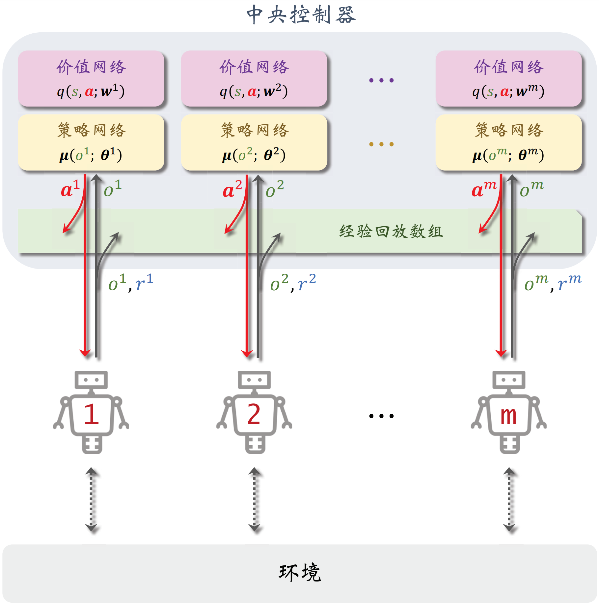
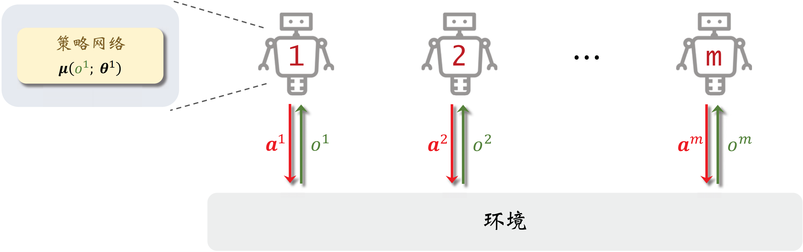

MADDPG
MA-A2C 算法仅限于离散控制，通过类似的思想可以将 DDPG 推广到多智能体环境下，优化目标函数为：
Ji(μ)=Es0∼b0(⋅)Es1∼p(⋅∣s0, μ(s0))⋯EsT∼p(⋅∣sT−1, μ(sT−1))[t=0∑TγtR(st, μ(st))]
其中，每个智能体对应着一个确定性策略，并组成状态到联合动作的映射 S↦A：
at=μ(st)={at1, at2, ⋯, atn}={μ1(st), μ2(st), ⋯, μn(st)}
在参数化的策略网络 μi(s∣θi) 和价值网络 qi(s, a1, a2, ⋯, an∣wi) 下，对应的确定性策略梯度为：
∇θiJi(θi)=t=0∑TγtEs0Es1⋯Est∇θiqi(t)[st, μ1(st∣θ1), ⋯, μi(st∣θi), ⋯, μn(st∣θn)]≈t=0∑TγtEs0Es1⋯Est∇θiqi[st, μ1(st∣θ1), ⋯, μi(st∣θi), ⋯, μn(st∣θn) ∣∣∣∣ wi]=t=0∑TγtEs0Es1⋯Est[∇θiμi(st∣θi)∇atiqi(st, at1, ⋯, ati, ⋯, atn∣wi)∣∣∣∣∣∀ j : atj=μj(st∣θj)]
同样地，为了平衡探索性，采样轨迹的行为策略 πi(⋅∣s) 在 μi(s∣θi) 的基础上加入随机噪声 ξi：
∇θiJi(θi)≈t=0∑TγtEs0∼b0(⋅)Ea0∼π(⋅∣s0)Es1∼p(⋅∣s0, a0)Ea1∼π(⋅∣s1)⋯Est∼p(⋅∣st−1, at−1)∇θiqi[st, μ(st∣θ) ∣∣∣∣ wi]
在这种异策略形式下，可以引入经验回放机制，在随机抽取的经验四元组下将确定性策略梯度近似为：
∇θiJi(θi)≈∇θiqi[st, μ1(st∣θ1), ⋯, μi(st∣θi), ⋯, μn(st∣θn) ∣∣∣∣ wi]
同时利用 TD 误差的平方作为损失函数来更新价值网络：
ℓi(wi)=21[δti]2=21[rt+1i+γqi[st+1, μ(st+1∣θ) ∣∣∣∣ wi]−qi(st, at∣wi)]2⇒∇wiℓi(wi)=−δti∇wiqi(st, at∣wi)
在局部观测下使用 CTDE 方法来实现 MADDPG 算法，并在线地交替更新策略参数和价值参数：
|
w1←w1+αδt1∇w1q1(st, at∣w1)w2←w2+αδt2∇w2q2(st, at∣w2)⋮wn←wn+αδtn∇wnqn(st, at∣wn)
|
θ1←θ1+β∇θ1q1[st, μ1(ot1∣θ1), μ2(ot2∣θ2), ⋯, μn(otn∣θn) ∣∣∣∣ w1]θ2←θ2+β∇θ2q2[st, μ1(ot1∣θ1), μ2(ot2∣θ2), ⋯, μn(otn∣θn) ∣∣∣∣ w2]⋮θn←θn+β∇θnqn[st, μ1(ot1∣θ1), μ2(ot2∣θ2), ⋯, μn(otn∣θn) ∣∣∣∣ wn]
|

在部署后每个智能体独立地通过局部观测进行决策：

也可以将 TD3 中的 Clipped Double Q、动作选择噪声和降低更新频率加入 MADDPG 进行改进缓解高估问题。